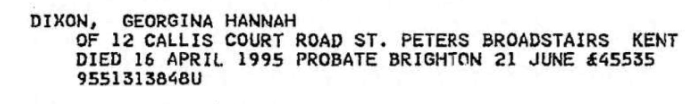
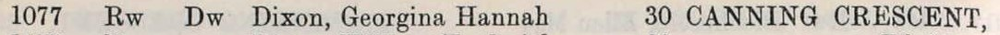
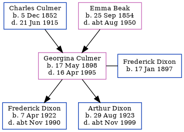

Georgina Hannah Dixon (née Culmer) 1898 - 1995
[ Home ] | [ Calendar ] | [ Surnames Index ] | [ Family History ]The daughter of Charles Culmer (an agricultural laborer) and Emma Beak, Georgina Culmer, (also known as Cissie Culmer) the first cousin twice-removed on the mother's side of <a href="I1.html">Nigel Horne</a>, was born in Minster, Thanet, Kent, England on May 17, 1898<span class="citation">1,2,3</span> and married Frederick Dixon (with whom she had 2 children: <a href="I3158.html">Frederick Charles</a> and <a href="I3159.html">Arthur S</a>) at St Paul's Church, Haringey, London, England on Jun 9, 1919.</p><p>Throughout her life, Georgina lived in several places: at 1 Chalk Hole Cottages, Flete, Kent, England on Mar 31, 1901<span class="citation">6</span>; at Newports Lydden in Flete on Apr 2, 1911<span class="citation">7</span>; at 30 Canning Crescent, Wood Green, London in 1938<span class="citation">5</span>; on 71 Tottenhall Road, Palmers Green, London on Sep 29, 1939<span class="citation">1</span>; and on 12 Callis Court Road, St Peters, Thanet, Kent in 1995. <p>She died on Apr 16, 1995 in Thanet, Kent<span class="citation">3,4</span>.
Parents
- Charles was born on Dec 5, 1852
- Emma was born on Sep 25, 1854
Children
- Frederick Charles was born on Apr 7, 1922
- Arthur S was born on Aug 29, 1923
Citations
- 1939 Register - Findmypast (was the wife of the head of the household)
- England & Wales births 1837-2006 - Findmypast
- England & Wales deaths 1837-2007 - Findmypast
- England & Wales Government Probate Death Index 1858-2019 - Findmypast
- London, England, Electoral Registers, 1832-1965 Ancestry.com Operations, Inc.
- 1901 England, Wales & Scotland Census - Findmypast (was age 2 and the daughter of the head of the household)
- 1911 Census for England & Wales - Findmypast (was age 12 and the daughter of the head of the household)
Media
Georgina Hannah Culmer - Probate

1938 Electoral Register

1901 England, Wales & Scotland Census - GBC/1901/0005521447
England & Wales births 1837-2006 - BMD/B/1898/2/AZ/000140/007
England & Wales deaths 1837-2007 - BMD/D/1995/4/80697500
England & Wales Government Probate Death Index 1858-2019 - GBOR/GOVPROBATE/C/1995-1995/00056571
1939 Register - TNA-R39-0890-0890I-011-29
Family Tree
Generated by Ged2Site. Last updated on Jul 20, 2025